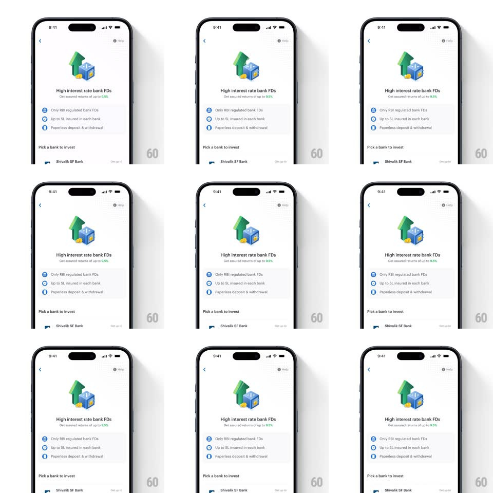

Media
Frame-by-frame

Rebuild this interaction 1:1: Smallcase's FD illustration shimmer - on the "High interest rate bank FDs" screen, a soft shimmer sweeps diagonally across the isometric illustration (green up-arrow, percent safe, coins) on a slow loop while the rest of the page stays still.

Rebuild this interaction 1:1: Smallcase's FD illustration shimmer - on the "High interest rate bank FDs" screen, a soft shimmer sweeps diagonally across the isometric illustration (green up-arrow, percent safe, coins) on a slow loop while the rest of the page stays still. ## Integration Integration: stack-agnostic spec - springs given as stiffness/damping, timed motions as duration + curve; map every value to your framework and animation library of choice. ## Scene A white product page: back chevron and Help, the isometric illustration (a chunky green upward arrow leaning on a blue safe stamped with a % coin, gold coins at the base), headline "High interest rate bank FDs", caption "Get assured returns of up to 9.5%", a checklist (Only RBI regulated bank FDs / Up to 5L insured in each bank / Paperless deposit & withdrawal), and "Pick a bank to invest" with bank rows below. ## Motion spec Pattern: looping diagonal sheen on the hero illustration. - A translucent white gradient band (about 40% of the illustration width, angled ~20deg) sweeps across the illustration left to right over 1.6s (ease-in-out), fading in and out at the edges. - The sweep runs every ~3s - a 1.6s pass, then a pause. - The band is masked to the illustration's bounding shape - it lights the arrow, safe, and coins, never the white page. - Highlights on the coin faces flare slightly as the band passes (localized brightness +15%). ## Calibration - The shimmer is subtle - a polish cue, not a disco; max band opacity ~25%. - Page content (checklist, bank rows) never animates - the shimmer is the only motion. ## Reduced motion No shimmer; static illustration. ## Don't miss - The sweep angle matches the illustration's isometric plane - it reads as light moving across a physical object. - The green arrow tip catches the brightest flare.